MÓDULO ITBI
Imposto de Transmissão de Bens Imóveis por Ato Oneroso “inter vivos”
Esse cadastro consiste em criar uma base contendo os tipos de situações dos imóveis em relação a quadra onde estão localizados.
Ex.: Interno – se o imóvel fica no meio da quadra.
Encravado – se o imóvel não faz testada com nenhum logradouro.
Esquina – se o imóvel está situado em uma esquina.
Para fazer inclusões nesse cadastro, preencha os seguinte campos:
Código
Esse campo será gerado automaticamente e corresponde ao código do item que está sendo incluído.
Descrição
Digite a descrição (nome) da situação que está incluindo.
Para alterar um cadastro de tipo de situação, basta selecionar o registro desejado e efetuar a alteração. O único campo permitido para alterar é a descrição.
Para excluir um cadastro de tipo de situação, basta selecionar o registro desejado e clicar no botão excluir.
Somente é permitida a exclusão de um registro desse cadastro desde que ele ainda não tenha sido vinculado a nenhuma ITBI.
Esse cadastro consiste em criar uma base contendo as formas de transmissão de imóveis, independentemente de ter ou não a incidência do imposto.
Nesse cadastro, devem ser lançados todos os item que estão definidos no Código Tributário Municipal, da parte que trata da incidência e da não incidência.
Ex.: compra e venda, cessão de direitos contratuais, compra e venda com usufruto, compra e venda da nu propriedade, etc.
Para fazer inclusões nesse cadastro, preencha os seguinte campos:
Código
Esse campo será gerado automaticamente e corresponde ao código do item que está sendo incluído.
Descrição
Informe nesse campo uma descrição que possibilite sua identificação no momento que for seleciona-la ao cadastrar uma ITBI.
Podemos ter como exemplos os que foram mencionados logo acima neste manual.
Desconto (%)
Nesse campo deve ser informado o percentual de desconto previsto na legislação para esse tipo de transação. Caso não haja nenhuma previsão/informação, deve-ser informado 0 (zero).
Observação
Nesse campo pode ser digitada qualquer observação a respeito desse tipo de transação, porém não é um campo obrigatório.
Alíquota (valor total)
Nesse campo deve ser informada a alíquota que incide sobre o valor a vista na transação que está sendo cadastrada.
Caso a transação não tenha incidência de imposto, deve ser informado alíquota 0 (zero).
Alíquota (financiamento)
Nesse campo deve ser informada a alíquota que incide sobre o valor financiado (valor financiado pelo sistema financeiro de habitação) na transação que está sendo cadastrada.
Caso a transação não tenha incidência de imposto, deve ser informado alíquota 0 (zero).
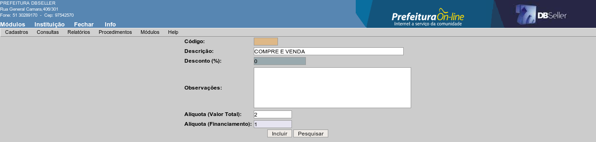
figura
1
Para efetuar alteração em um cadastro de tipo de transação, selecione o item desejado na lista conforme figura 2, altere os campos desejados e após clique no botão alterar.
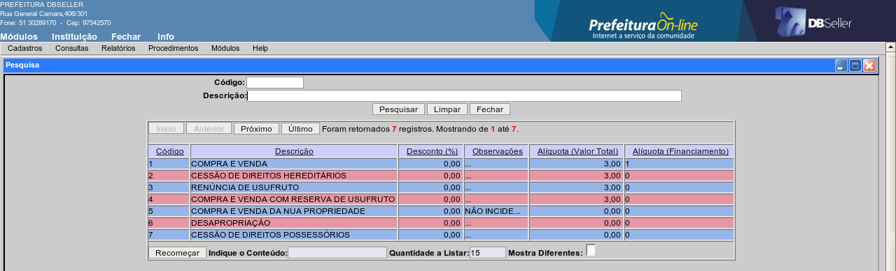
figura
2
Para excluir um cadastro de tipo de transação, basta selecionar o registro desejado na lista conforme figura 2 e clicar no botão excluir.
Somente é permitida a exclusão de um registro que ainda não tenha sido vinculada a nenhuma ITBI.
Para efetuar a consulta de ITBI, deve ser informado pelo menos um dos filtros, conforme demonstrado nas figuras 3 e 4.
Adquirente
Informando o nome do adquirente será apresentada uma lista contendo todos os cadastros de ITBI que foram efetuados nesse nome.
Transmitente
Informando o nome do transmitente será apresentada uma lista contendo todos os cadastros de ITBI que foram efetuados nesse nome.
Data inicial / Data final
Informando o período desejado será apresentada uma lista contendo todos os cadastros de ITBI efetuados no intervalo de datas informado.
Caso seja informada apenas a data inicial, será apresentada uma lista com os cadastros efetuados a partir dessa data até a data atual.
Caso seja informada apenas a data final, será apresentada uma lista com todos os cadastros de ITBI efetuados até a data indicada, desconsiderando a data inicial.
Tipo de ITBI
Selecione o tipo de ITBI que deseja apresentar na consulta conforme os filtros mencionados anteriormente.
Ex.: caso informe a data inicial: 01/01/2007 e data final: 31/12/2007 e selecione o tipo de ITBI urbana, será apresentada uma lista somente com as ITBIs urbanas cadastradas nesse intervalo de datas.
Matrícula do imóvel
Informe o número de uma determinada matrícula que deseja consultar a ITBI.
Caso tenha sido incluída mais de uma ITBI para a matrícula indicada, serão apresentados os registros para selecionar o que deseja consultar.
Setor
Informe o setor desejado e será apresentada uma lista com todas as ITBIs cadastradas para os imóveis desse setor.
Quadra
Informe a quadra desejada e será apresentada uma lista com todas as ITBIs cadastradas para os imóveis que pertencem a essa quadra.
Pode-se utilizar os dois filtro mencionados (setor/quadra) de forma conjugada, ou seja, se for informado o setor e a quadra, será apresentada uma listas com as ITBIs cadastrada para os imóveis do setor e quadra indicado.
Logradouro
Informe o código do logradouro desejado ou selecione na lista clicando no link. Será apresentada uma lista contendo todas as ITBIs cadastradas para os imóveis que estejam localizados no logradouro indicado.
As opções de filtro – matrícula do imóvel, setor, quadra, logradouro - só estarão ativas se o tipo de ITBI selecionado for urbana.
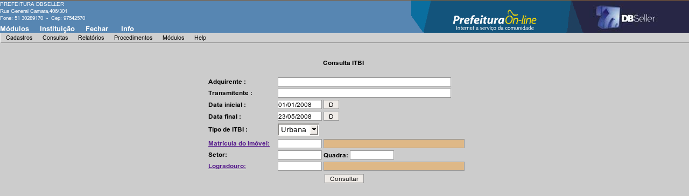
figura
3 – consulta de itbi urbana
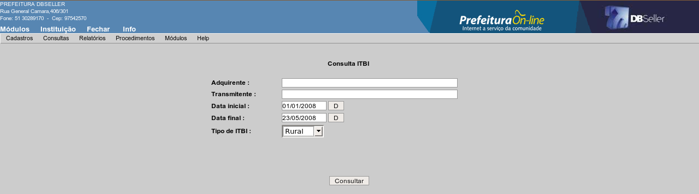
figura
4 – consulta de itbi rural
Esse relatório imprime todos as ITBIs que foram cadastradas e liberadas.
Só serão listadas no relatório as ITBIs cujas guias já tenham sido emitidas.
Período
Informe o intervalo de datas referente a data de inclusão da ITBI que deseja imprimir no relatório.
Caso seja informado apenas a data inicial, serão impressos todos os registros a partir dessa data até a data atual. Caso seja informado apenas a data final, serão impressos todos os registros até a data indicada, desconsiderando a data de início.
Ordem
Selecione a ordem que deseja imprimir no relatório, podendo ser pelo código da ITBI (guia) ou pelo nome do adquirente.
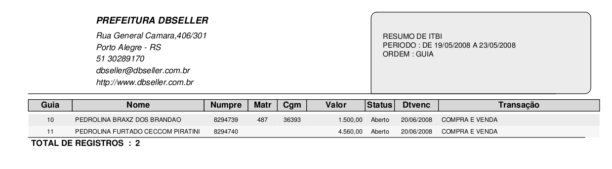
figura
5
Esse relatório imprime uma relação com os tipos de transações cadastrados, podendo ser ordenado pelo código da transação ou pelo nome (alfabética).
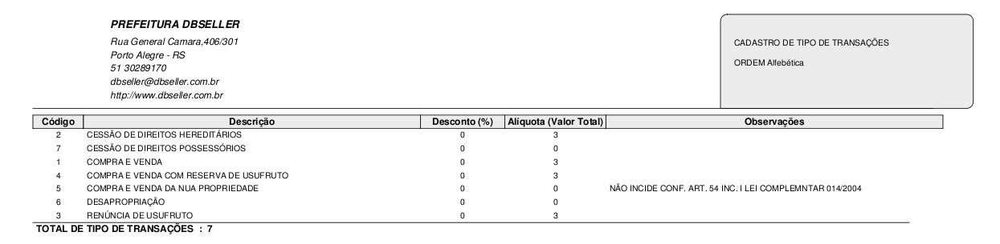
figura
6
Esse relatório imprime uma relação com os tipos de situações cadastradas, podendo ser ordenado pelo código da situação ou pelo nome (alfabética).
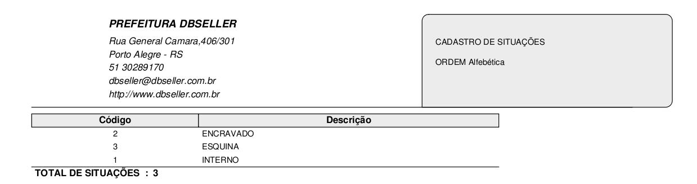
figura
7
Nessa opção é efetuada a emissão da guia de ITBI conforme modelo demonstrado na figura 8. A guia de ITBI é composta por todas as informações lançadas em seu cadastro, além dos valores atribuídos ao imóvel pelo avaliador da prefeitura. A guia de ITBI também é composta pelo recibo de arrecadação do débito.
Só é permitida a emissão da guia de ITBIs que já tenha sido efetuada a liberação (avaliação pela prefeitura).
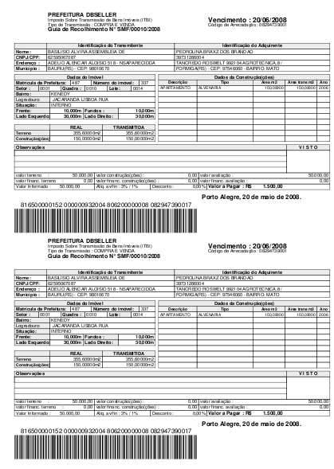
figura
8
Para incluir uma ITBI, acesse o menu correspondente ao tipo de imóvel objeto da transação, ou seja, se o imóvel estiver localizado na zona urbana do município, acesse o menu “Urbano”, se o imóvel estiver localizado na zona rural, acesse o menu “Rural” conforme figura 9
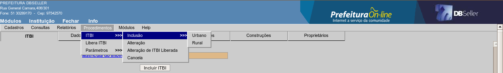
figura
9
Para inclusão de ITBI urbano, o imóvel deverá obrigatoriamente estar registrado no cadastro imobiliário, pois esse ITBI será vinculado a uma matrícula.
Para inclusão, informe o número da matrícula ou clique no link “selecionar o imóvel” pesquisando pelos seguintes campos:
Logradouro – será apresentada uma lista contendo todos os imóveis que fazem testada para o logradouro informado, devendo ser selecionado o registro desejado.
Nome/razão social - será apresentada uma lista contendo todos os imóveis em que o contribuinte informado é proprietário, devendo ser selecionado o registro desejado.
Setor/quadra/lote – esses campos podem ser informados simultaneamente, apresentando assim uma lista com as matrículas vinculadas ao lote (caso haja mais de uma).
Outra forma de fazer pesquisa utilizando setor/quadra/lote é informar apenas um dos campos, nesse caso será apresentada uma lista com todas as matrículas que estão vinculadas a lotes que possuam em seu cadastro o item informado.
Ex.: se for efetuada a pesquisa informando setor 0001 e quadra 0010, nesse caso serão apresentadas todas as matriculas vinculadas ao lotes que estão na localização indicada. Caso informe apenas a quadra 0010, nesse caso, será apresentada uma lista com todas as matrículas que estão ligadas a todos os lotes que estão localizados na quadra indicada, independentemente do setor.
Referência anterior – essa opção de filtro, consiste em fazer uma busca no cadastro da matrícula que possui como a referência anterior o código informado. Esse código corresponde ao número da matrícula utilizada anteriormente por outro sistema informatizado de cadastro imobiliário.
Na figura 10 está sendo demonstrado como opção de filtro, a busca pelo setor 0001 e quadra 0010 e na figura 11 está sendo demonstrado o resultado com as matrículas encontradas.
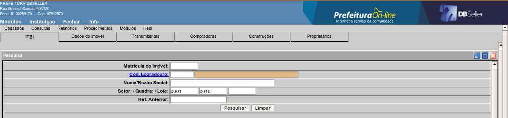
figura
10
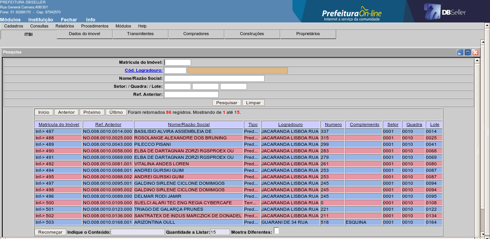
figura
11
Após selecionar a matrícula desejada, clique no botão incluir e preencha os campos conforme descrito a seguir.
ABA ITBI
Código da ITBI
Esse campo será gerado automaticamente e corresponde ao número que esse cadastro vai receber após clicar no botão incluir.
Tipo de transação
Informe o código do tipo de transação ou clique no link para selecionar na lista.
Área do terreno
Informe a área do imóvel em metros quadrados. caso a área possua casas decimais, o separador para ser digitado é ponto(.) como no exemplo.
Ex.: 355.60
Área edificada
Informe a área edificada sobre o imóvel, utilizando o mesmo princípio para casas decimais do item acima.
Observações
Nesse campo, pode ser digitado qualquer observação que queira fazer a respeito desse cadastro.
Valor da transação
Nesse campo deve ser informado o valor pago a vista na transação, declarado pelo contribuinte.
Valor financiado da transação
Nesse campo deve ser informado, caso haja, o valor que o contribuinte declarou que está sendo financiado na aquisição do imóvel.
Área transmitida do terreno
Esse campo será preenchido automaticamente com a mesma área informada na área do terreno, porém pode ser alterada e corresponde a parte do imóvel está sendo transmitida na transação.
E-mail de contato
Nesse campo pode ser registrado o e-mail para contato com o contribuinte. O preenchimento desse campo não é obrigatório.
Frente / Fundos / Lado direito / Lado esquerdo
Informe a metragem linear correspondente a cada testada do terreno.
Situação
Informe a situação do terreno ou clique no link para selecionar em uma lista. Essa informação corresponde ao posicionamento do imóvel na quadra onde está localizado.
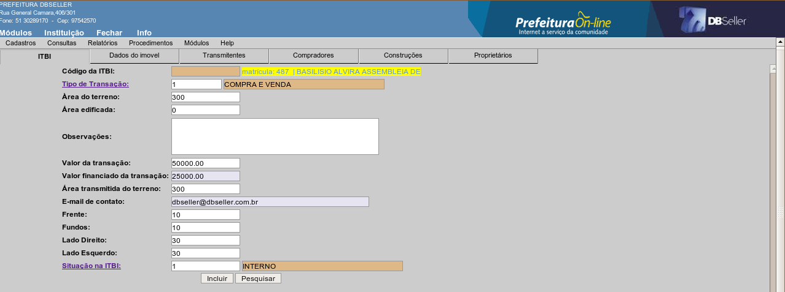
figura
12
ABA DADOS DO IMÓVEL
Nessa aba serão apresentados os dados do terreno que estão registrados no cadastro imobiliário: setor, quadra, lote e endereço, porém permite que sejam alteradas essas informações, pois na guia de ITBI devem ser impressos os dados conforme estão registrados no Cartório de Registro de Imóveis.
ABA TRANSMITENTES
Nessa aba, são informados os transmitentes do imóvel. Uma ITBI pode possuir mais de um transmitente, porém um deles deve ser escolhido como principal.
Sempre que cadastrar uma ITBI, será apresentado como transmitente os contribuintes que são proprietários do imóvel, porém caso essa informação não coincida, pode ser excluído e adicionado outros transmitentes.
Os novos transmitentes adicionados na ITBI, podem ser do cadastro de CGM, ou ter os dados digitados diretamente conforme os campos abaixo.
Numcgm
Para incluir transmitentes que estejam no cadastro do CGM, basta Informar o código do CGM do ou clicar no link para pesquisar pelo nome, selecionando se o transmitente é o principal e o sexo e após clicar no botão incluir.
Para os demais transmitentes, repita a operação, porém só é permitido um transmitente principal em cada ITBI.
Número da guia de ITBI
Esse campo corresponde ao código da ITBI e será preenchido automaticamente.
Os campos: nome, CPF/CNPJ, endereço, número, complemento, bairro, caixa postal, UF, CEP e e-mail devem ser preenchidos para os casos em que o transmitente que está sendo incluído na ITBI, não está no cadastro do CGM.
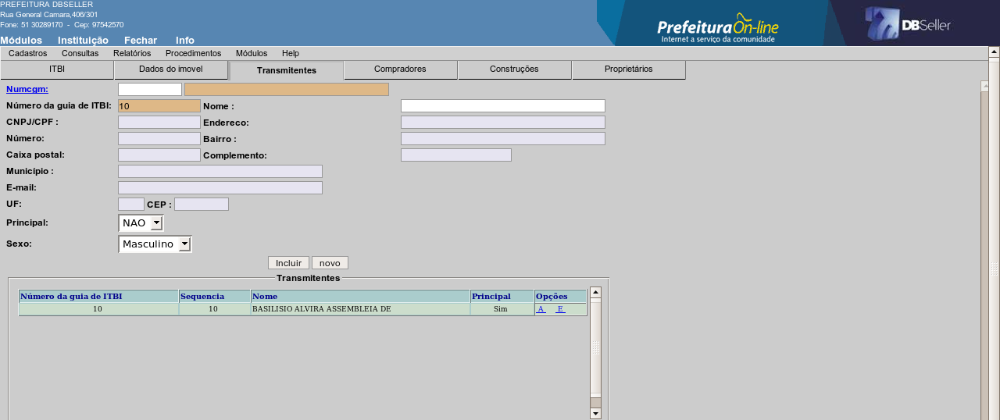
figura
13
ABA COMPRADORES
Nessa aba, são informados os compradores do imóvel. Uma ITBI pode possuir mais de um comprador, porém um deles deve ser escolhido como principal.
Os compradores adicionados na ITBI, podem ser do cadastro de CGM, ou ter os dados digitados diretamente conforme os campos abaixo.
Numcgm
Para incluir um comprador que esteja no cadastro do CGM, basta informar o código do CGM ou clicar no link para pesquisar pelo nome, selecionando se o comprador é o principal e o sexo e após clicar no botão incluir.
Para os demais compradores, repita a operação, porém só é permitido um comprador principal em cada ITBI.
Número da guia de ITBI
Esse campo corresponde ao código da ITBI e será preenchido automaticamente.
Os campos: nome, CPF/CNPJ, endereço, número, complemento, bairro, caixa postal, UF, CEP, e e-mail devem ser preenchidos para os casos em que o comprador que está sendo incluído na ITBI, não está no cadastro do CGM.
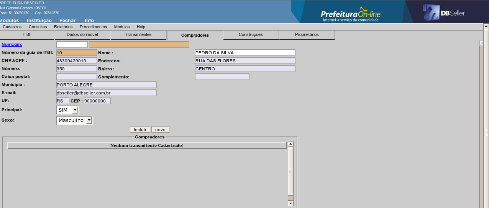
figura
14
ABA CONSTRUÇÕES
Nessa aba são lançadas as construções existentes no imóvel que está sendo transmitido.
Área
Informe a área total da construção.
Área transmitida
Informe a área da construção que será transmitida. Esse campo será preenchido automaticamente com a área total da construção, porém pode ser alterado.
Ano da construção
Nesse campo, informe o ano que a construção que está sendo lançada foi edificada.
Observações
Nesse campo pode ser digitada qualquer observação a respeito da construção que está sendo lançada.
Ex.: Construção em ruínas, construção em andamento, etc.
Espécie de construção
Selecione a espécie da construção que está sendo incluída. A relação que aparece para selecionar faz parte do cadastro de características de construções do cadastro imobiliário que estão vinculados ao grupo de espécie de construções para ITBI.
Ex.: alvenaria, madeira, mista, etc.
Tipo de construção
Selecione o tipo da construção que está sendo incluída. A relação que aparece para selecionar faz parte do cadastro de características de construções do cadastro imobiliário que estão vinculados ao grupo de tipo de construções para ITBI.
Ex.: casa, apartamento, garagem, loja, pavilhão, etc.
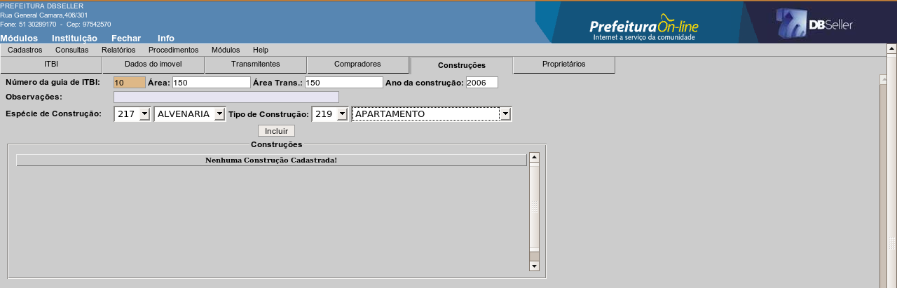
figura
15
Para inclusão de ITBI rural, devem ser lançadas as informações relativas ao imóvel, conforme especificação dos campos a seguir.
ABA ITBI
Código da ITBI
Esse campo será gerado automaticamente e corresponde ao número que esse cadastro vai receber após clicar no botão incluir.
Tipo de transação
Informe o código do tipo de transação ou clique no link para selecionar na lista.
Área do terreno
Informe a área do imóvel em hectares quadrados. Caso a área possua casas decimais, o separador para ser digitado é ponto (.) como no exemplo.
Ex.: 76.00
Área edificada
Informe a área edificada sobre o imóvel, utilizando o mesmo princípio para casas decimais do item acima.
Observações
Nesse campo, pode ser digitado qualquer observação que queira fazer a respeito desse cadastro.
Valor da transação
Nesse campo deve ser informado o valor pago a vista na transação declarado pelo contribuinte.
Valor financiado da transação
Nesse campo deve ser informado, caso haja, o valor que o contribuinte declarou como sendo financiado na aquisição do imóvel.
Área transmitida do terreno
Esse campo será preenchido automaticamente com a mesma área informada na área do terreno, porém pode ser alterada e corresponde a parte do imóvel está sendo transmitida na transação.
E-mail de contato
Nesse campo pode ser registrado o e-mail para contato com o contribuinte. O preenchimento desse campo não é obrigatório.
Frente / Fundos / Profundidade
Informe a metragem linear correspondente a cada testada do terreno.
Característica
Para lançar as características que compõem o imóvel rural, clique no link Características. Será apresentada na tela, uma relação com as características configuradas para identificar a composição da pedologia e utilização da área conforme figura 16. Informe o percentual que cada característica representa sobre o total da área.
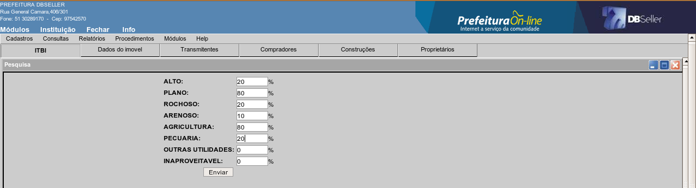
figura
16
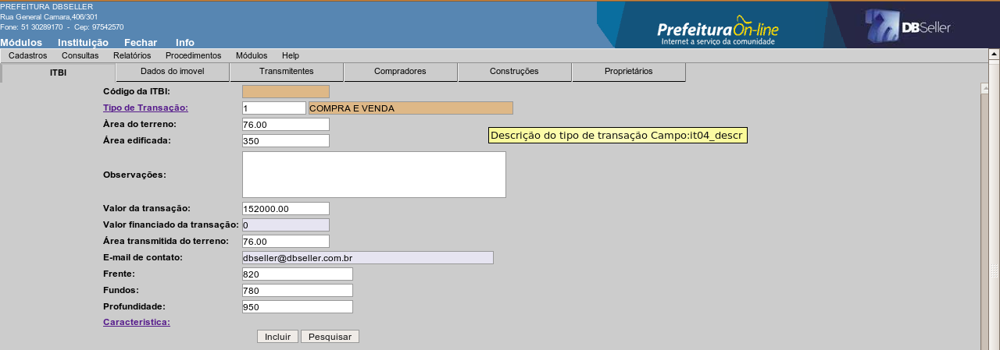
figura
17
ABA DADOS DO IMÓVEL
Nessa aba podem ser informados os dados relativos a localização do imóvel como: setor, quadra, lote, endereço porém, essas informações não são campos obrigatórios, pois normalmente áreas rurais não são organizadas dessa forma.
ABA TRANSMITENTES
Nessa aba, são informados os transmitentes do imóvel. Uma ITBI pode possuir mais de um transmitente, porém um deles deve ser escolhido como principal.
Os transmitentes adicionados na ITBI, podem ser do cadastro de CGM, ou ter os dados digitados diretamente conforme os campos abaixo.
Numcgm
Para incluir transmitentes que estejam no cadastro do CGM, basta Informar o código do cgm do ou clicar no link para pesquisar pelo nome, selecionar se o transmitente é o principal e o sexo e após clicar no botão incluir.
Para os demais transmitentes, repita a operação, porém só é permitido um transmitente principal em cada ITBI.
Número da guia de ITBI
Esse campo corresponde ao código da ITBI e será preenchido automaticamente.
Os campos: nome, CPF/CNPJ, endereço, número, complemento, bairro, caixa postal, UF, CEP, e e-mail devem ser preenchidos para os casos em que o transmitente que está sendo incluído na ITBI, não está no cadastro do CGM.
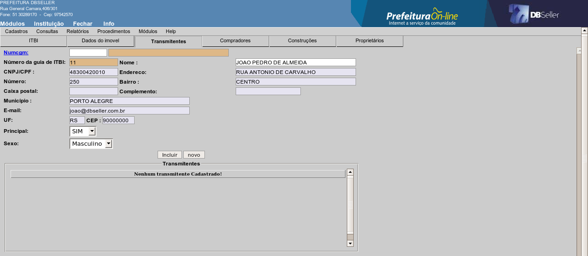
figura
18
ABA COMPRADORES
Nessa aba, são informados os compradores do imóvel. Uma ITBI pode possuir mais de um comprador, porém um deles deve ser escolhido como principal.
Os compradores adicionados na ITBI, podem ser do cadastro de CGM, ou ter os dados digitados diretamente conforme os campos abaixo.
Numcgm
Para incluir comprador que estejam no cadastro do CGM, basta Informar o código do cgm do ou clicar no link para pesquisar pelo nome, selecionar se o comprador é o principal e o sexo e após clicar no botão incluir.
Para os demais compradores, repita a operação, porém só é permitido um comprador principal em cada ITBI.
Número da guia de ITBI
Esse campo corresponde ao código da ITBI e será preenchido automaticamente.
Os campos: nome, CPF/CNPJ, endereço, número, complemento, bairro, caixa postal, UF, CEP, e e-mail devem ser preenchidos para os casos em que o comprador que está sendo incluído na ITBI, não está no cadastro do CGM.
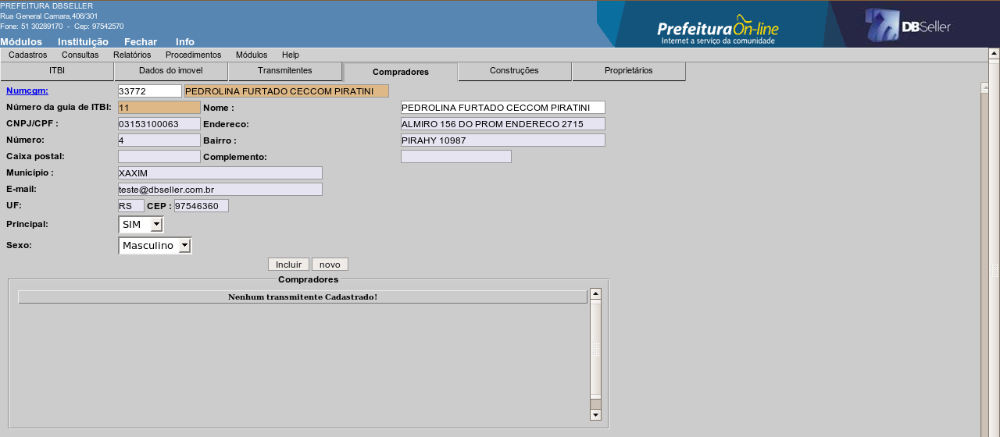
figura
19
ABA CONSTRUÇÕES
Nessa aba são lançadas as construções existentes no imóvel que está sendo transmitido.
Área
Informe a área total da construção.
Área transmitida
Informe a área da construção que será transmitida. Esse campo será preenchido automaticamente com a área total da construção, porém pode ser alterado.
Ano da construção
Nessa campo, informe o ano que a construção que está sendo lançada foi edificada.
Observações
Nesse campo pode ser digitada qualquer observação a respeito da construção que está sendo lançada.
Ex.: Construção em ruínas, construção em andamento, etc.
Espécie de construção
Selecione a espécie da construção que está sendo incluída. A relação que aparece para selecionar faz parte do cadastro de características de construções do cadastro imobiliário que estão vinculados ao grupo de espécie de construções para ITBI.
Ex.: alvenaria, madeira, mista, etc.
Tipo de construção
Selecione a tipo da construção que está sendo incluída. A relação que aparece para selecionar faz parte do cadastro de características de construções do cadastro imobiliário que estão vinculados ao grupo de tipo de construções para ITBI.
Ex.: casa, apartamento, garagem, loja, pavilhão, etc.
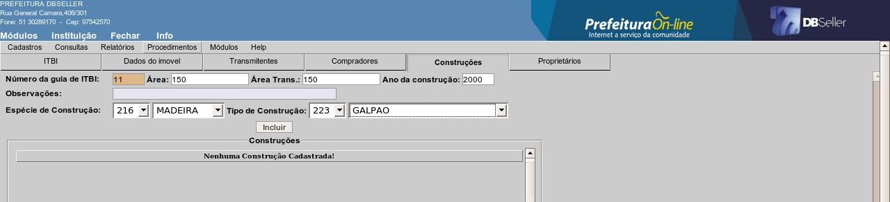
figura
20
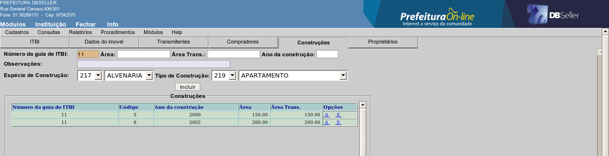
figura
21
A rotina de liberação de ITBI, consiste no processo pelo qual o avaliador da prefeitura atribui o valor do imóvel objeto da transmissão.
Para avaliar uma ITBI, selecione o registro desejado na lista conforme figura 22. A tela será apresentada contendo as informações que foram lançadas na inclusão. Após a seleção, preencha os campos conforme descrito a seguir e demonstrado na figura 23.
Data de Vencimento
Nesse campo deve ser informada a data de vencimento do débito, que será gerado correspondente ao imposto devido pelo contribuinte.
Sempre será sugerida a data de vencimento considerando 30 dias após a data que foi cadastrada a ITBI, porém pode ser alterada.
Observações
Nesse campo, pode ser lançada qualquer observação a respeito da ITBI que está sendo liberada.
Valor a vista do terreno
Nesse campo deve ser informado o valor do terreno atribuído pelo avaliador da prefeitura correspondente a parcela da transação que será paga a vista pelo adquirente do imóvel.
Valor a vista da construção
Nesse campo deve ser informado o valor da(s) construção(ões) atribuído pelo avaliador da prefeitura correspondente a parcela da transação que será paga a vista pelo adquirente do imóvel.
Valor total a vista
Esse campo será preenchido automaticamente com o valor da soma dos valores a vista do terreno e o valor a vista da construção.
Valor financiado do terreno
Nesse campo deve ser informado o valor do terreno atribuído pelo avaliador da prefeitura correspondente a parcela da transação que será financiado pelo adquirente do imóvel.
Valor financiado da construção
Nesse campo deve ser informado o valor da(s) construção(ões) atribuído pelo avaliador da prefeitura correspondente a parcela da transação que será financiado pelo adquirente do imóvel.
Valor bruto
Esse campo será preenchido automaticamente e corresponde ao valor do imposto calculado aplicando as alíquotas definidas no cadastro de tipo de transação sobre os valores atribuídos pelo avaliador, considerando o percentual de desconto quando houver.
Valor a pagar
Essa informação corresponde ao valor do imposto incidente sobre a transmissão que será impresso no boleto de pagamento integrado com o formulário para pagamento.
O valor do imposto gerado nessa rotina, não é lançado como débito pendente para o contribuinte, somente será visualizado como “Pagamento Efetuado” na Consulta Geral Financeira quando for registrado seu pagamento. Dessa forma, caso o contribuinte não efetuar o pagamento, não será apresentado nenhum débito em aberto em seu nome e isso não será considerado na emissão de certidão de débitos.
Após o preenchimento dos valores descritos anteriormente, clique o botão “Libera Guia”. Após esse procedimento, deverá acessar o menu Relatórios >> Emite Guia para realizar a impressão do formulário de ITBI devidamente preenchido e com o boleto para pagamento do imposto.
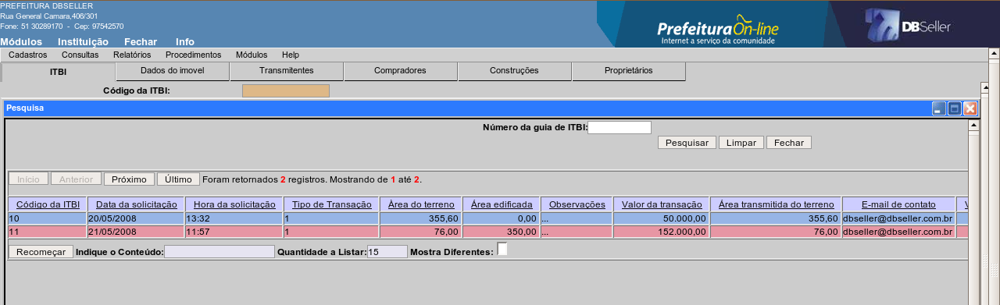
figura
22
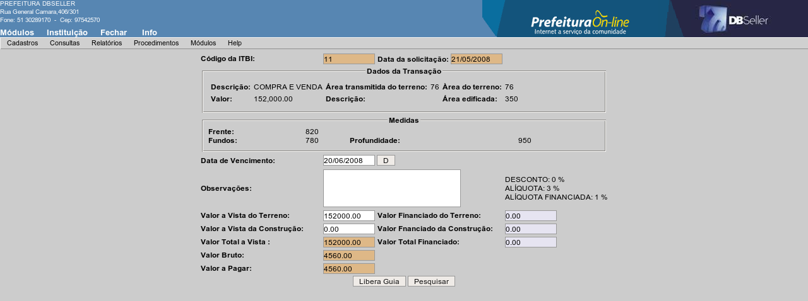
figura
23
Nessa rotina, pode-se efetuar alteração nas ITBIs que ainda foram liberadas (avaliadas) pelo avaliador da prefeitura. Nesse caso, é permitido alterar qualquer informação lançada na inclusão exceto a matrícula que para o qual foi feita a inclusão no caso de ITBI urbana.
Para efetuar a alteração, selecione o registro desejado na lista conforme figura 22. Somente serão relacionadas na lista as ITBIs que ainda não foram liberadas.
Nessa rotina, pode-se efetuar alteração somente das informações relativas a data de solicitação, data da liberação e data de vencimento do débito, para isso basta selecionar o registro desejado na lista conforme figura 24 e efetuar as alterações conforme demonstrado na figura 25.
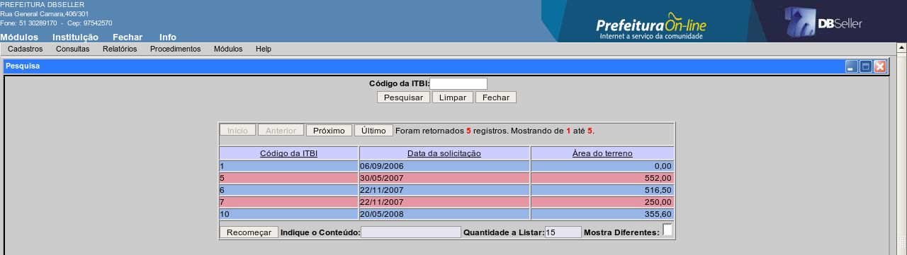
figura
24
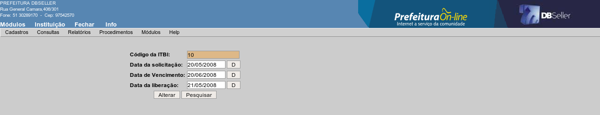
figura
25
Nesse parâmetro, deve ser informado qual o grupo de características que será apresentado na inclusão de uma ITBI na aba construções para definir o tipo de construção. Esse grupo de característica faz parte do cadastro de grupos de características efetuados no módulo cadastro imobiliário.
Ex.: grupo: tipo de construção
Características ligadas ao grupo: casa, apartamento, galpão, depósito, pavilhão, etc.
Nesse parâmetro, deve ser informado qual o grupo de características que será apresentado na inclusão de uma ITBI na aba construções para definir a espécie da construção. Esse grupo de característica faz parte do cadastro de grupos de características efetuados no módulo cadastro imobiliário.
Ex.: grupo: espécie de construção
Características ligadas ao grupo: alvenaria, madeira, mista, etc.
Nesse parâmetro são configurados os seguinte campos:
Numcgm
Informe o CGM que deverá ser registrado o pagamento do débito quando for efetivado o pagamento de uma guia de ITBI que foi cadastrada sem utilizar nenhum comprador do cadastro do CGM e sim digitado diretamente os dados na inclusão da guia. Normalmente nesse parâmetro é configurado o CGM da própria prefeitura.
Código da receita
Informe nesse campo o código da receita orçamentária que será registrado o pagamento do débito.
figura
26
|
DBSeller Serviços de Informática Ltda. – www.dbseller.com.br Rua General Câmara, 406/301 - Porto Alegre/RS - Fone: (51) 3076-5101 |
|